Conteúdo da LogicSim
Selecione umas das apções abaixo para aprender os conteúdos da aplicação.
Selecione umas das apções abaixo para aprender os conteúdos da aplicação.
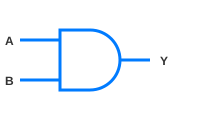
A saída é 1 quando todos os valores de entrada forem 1.
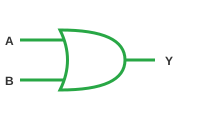
A saída é 1 quando pelo menos uma das entradas for 1.
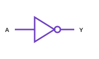
A saída pode receber sinais positivos que viram negativo.
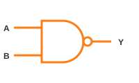
A saída é 0 somente quando todas as entradas forem 1.
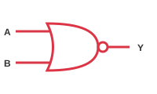
A saída é 1 somente quando todas as entradas forem 0.
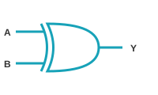
A saída é 1 somente quando as entradas são diferetes.
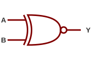
A saída é 1 quando as entradas são iguais e 0 quando são diferente.
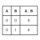
Uma de lista todas as combinações possíveis de entrada e saídas do circuito.
Uma ligação direta e exclusiva entre dois dispositivos para trocar de dados.
É um circuito digital básico que realiza a multiplicação lógica. Ela emite um sinal verdadeiro (1) apenas quando todas as suas entradas forem verdadeiras. Se qualquer uma das entradas for falsa (0), a saída será obrigatoriamente falsa. Suponha que você vai ligar o computador E também vai ligar o monitor o A será igual a 1 pois você foi ligar o computador e B será também 1 pois você ligou o monitor então nesse caso a nossa saída será 1 e não zero pois ambas condições tiveram saída 1. Confira exemplos abaixo:
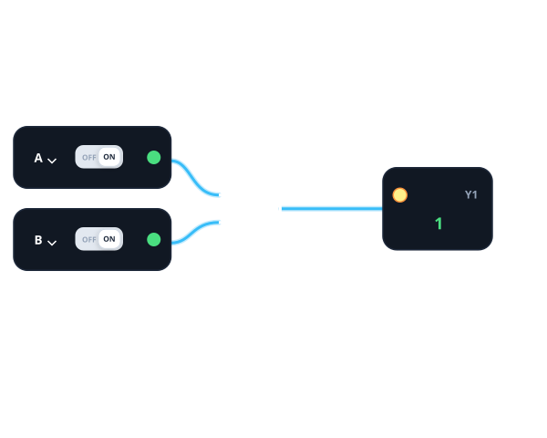
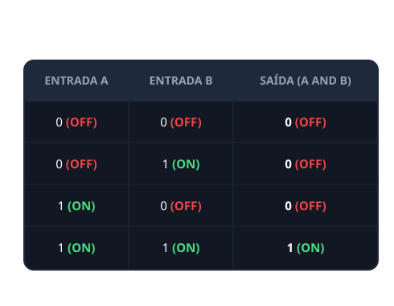
Nessas imagem vemos que tem algo em incomum, ambas as entradas tem valor de 1 com A e B ou em termos técnicos A · B fazendo sua multiplicação com a saída sendo 1, E isso mostrando na simulação com a porta AND e também mostrando na tabela verdade e no circuito de comutação mas todas as imagem mesmo com regras diferentes chegam na mesma saída, Não importa quantas entradas terá na porta lógica mas para ser AND todas devem está ligadas. Clique na imagem do circuito para ir direito ao simulador com o exemplo.
A porta OR é um circuito digital básico que realiza a soma lógica. Ela emite um sinal verdadeiro (1) se pelo menos uma de suas entradas for verdadeira. A saída só será falsa (0) se todas as entradas forem obrigatoriamente falsas.Imagine a seguinte situação: para uma lâmpada acender, você pode apertar o interruptor A OU o interruptor B. Se você apertar o interruptor A (A = 1) e deixar o B desligado (B = 0), a lâmpada ainda assim irá acender (Saída = 1). Confira exemplos abaixo:
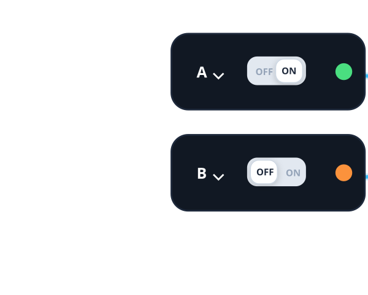
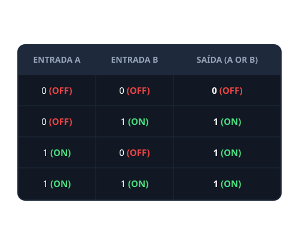
Nessas imagem vemos que tem algo em incomum, uma das entradas tem valor de 1 com A OU B ou em termos técnicos A + B fazendo sua multiplicação com a saída sendo 1, E isso mostrando na simulação com a porta OR e também mostrando na tabela verdade e no circuito de comutação mas todas as imagem mesmo com regras diferentes chegam na mesma saída, Não importa quantas entradas estiverem ligadas ser pelo menos uma estive ligada a saída será 1. Clique na imagem do circuito para ir direito ao simulador com o exemplo.
A porta NOT é um circuito digital básico que realiza a negação lógica. Ela possui apenas uma entrada e uma saída. Seu funcionamento é simples: a saída sempre apresenta o valor oposto ao da entrada. Assim, quando a entrada for verdadeira (1), a saída será falsa (0). Da mesma forma, quando a entrada for falsa (0), a saída será verdadeira (1). Imagine a seguinte situação: uma lâmpada é controlada por um sistema que funciona de forma invertida. Se o interruptor estiver desligado (Entrada = 0), a lâmpada acende (Saída = 1). Porém, ao ligar o interruptor (Entrada = 1), a lâmpada apaga (Saída = 0). Confira os exemplos abaixo:
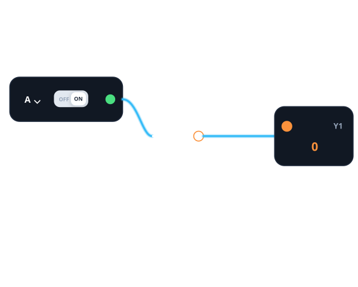
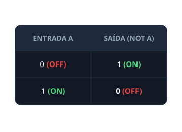
Nessas imagem as entradas manda sinal(A) de 1 ou 0 mas no NOT ele faz a negação(A') dessas entradas ou qualquer outra entrada, E isso mostrando na simulação com a porta NOT e também mostrando na tabela verdade e no circuito de comutação mas todas as imagem mesmo com regras diferentes chegam na mesma saída, Não importa quantas entradas estiverem ligadas, O NOT pega aquela entrada 1 e transformar em 0 ou contrário. Clique na imagem do circuito para ir direito ao simulador com o exemplo.